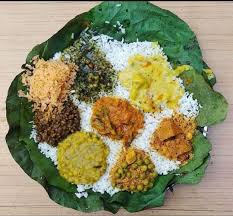
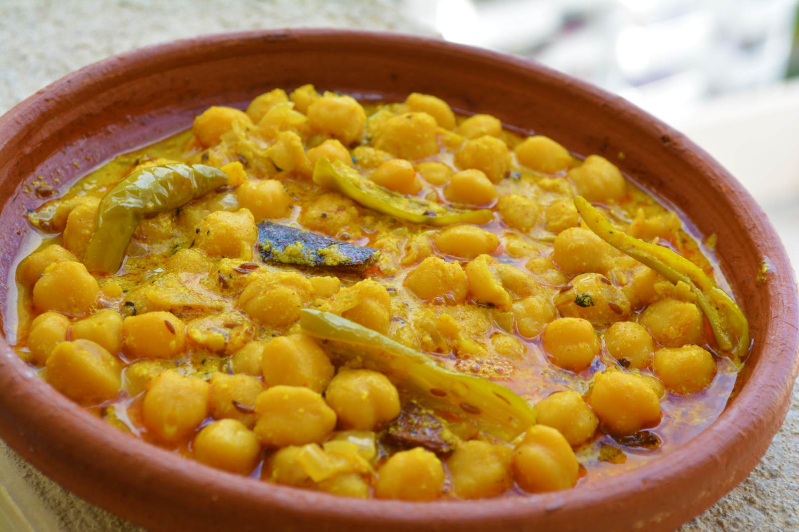
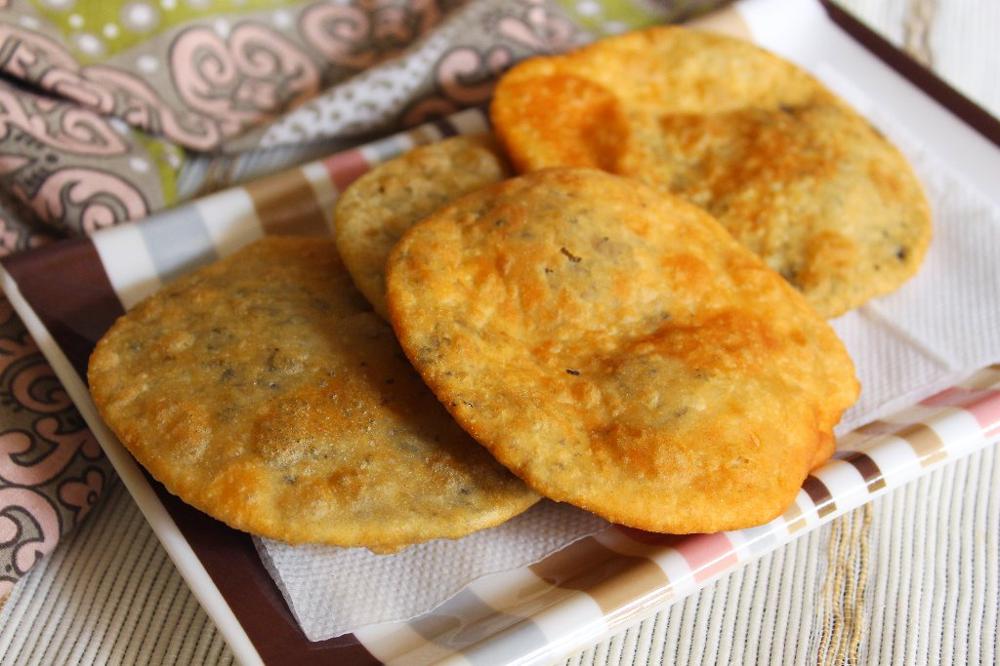
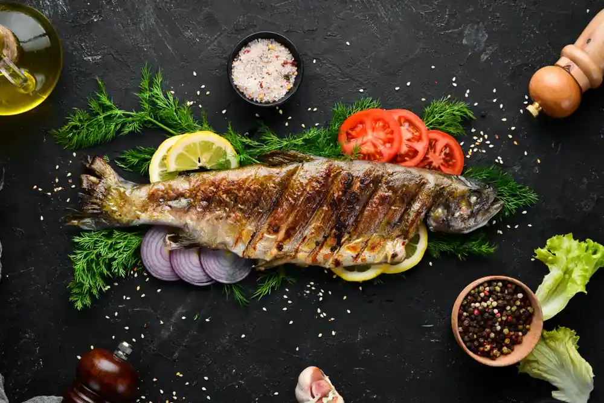
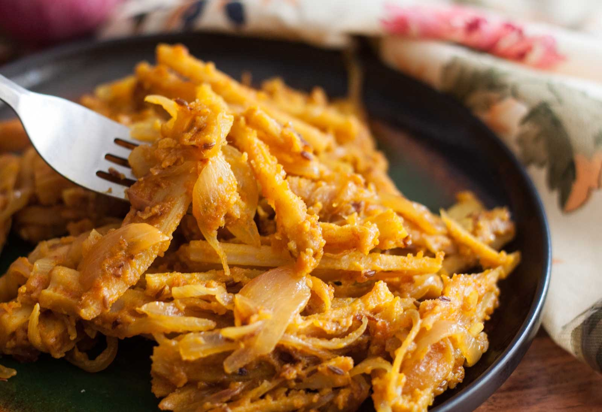
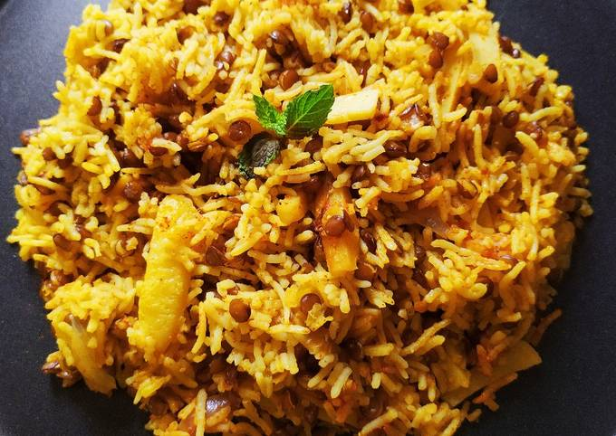
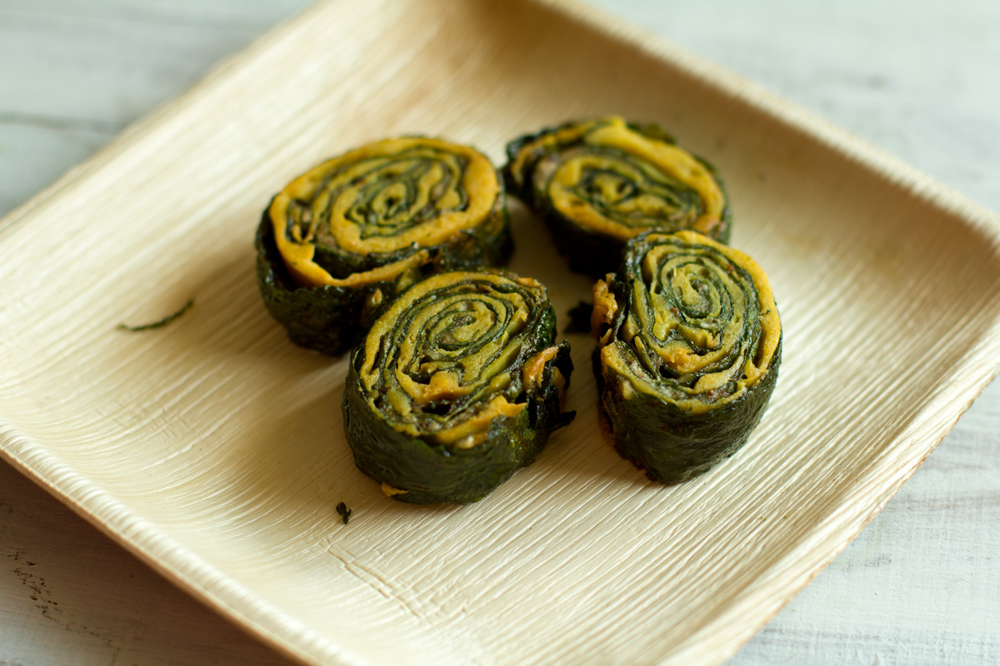

Dham
A festive meal served during special occasions and weddings. Includes rice, dal (lentils), madra (yogurt-based curry), rajma, khatta (sweet and sour sauce), boor ki kari, and sweet rice (meetha). Traditionally prepared by Botis (a special community of Brahmin cooks)

Madra
A thick yogurt-based curry made with chickpeas (chana) or rajma (kidney beans). Cooked with a variety of spices including cardamom, cinnamon, and cloves. A variant of madra using white chickpeas cooked in yogurt gravy with spices.

Siddu
A steamed wheat flour bread with a filling of either spiced dal, vegetables, or dry fruits. Typically served with ghee and chutney.

Babru
Similar to a kachori, made with black gram (urad dal) filling and deep-fried. Popular in Mandi region.

Kullu Trout
A delicacy from the Kullu region. Freshwater trout fish is marinated in minimal spices and cooked to retain its flavor.

Bhey
Made with lotus stems and cooked with spices like ginger, garlic, and gram flour.

Tudkiya Bhath
A type of pulao from the Chamba region. Made with rice, lentils, potatoes, yogurt, garlic, and spices.

Patrode
Patrode also known as patrodo, patra, or patrodu, is a steamed vegetarian dish made from colocasia leaves